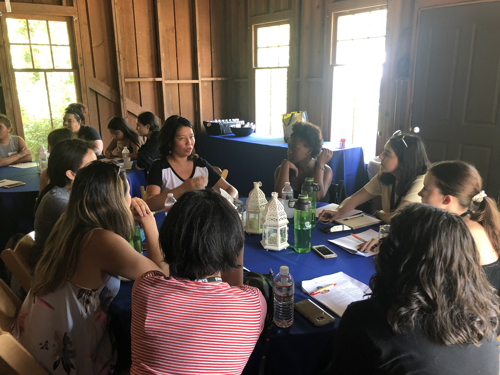
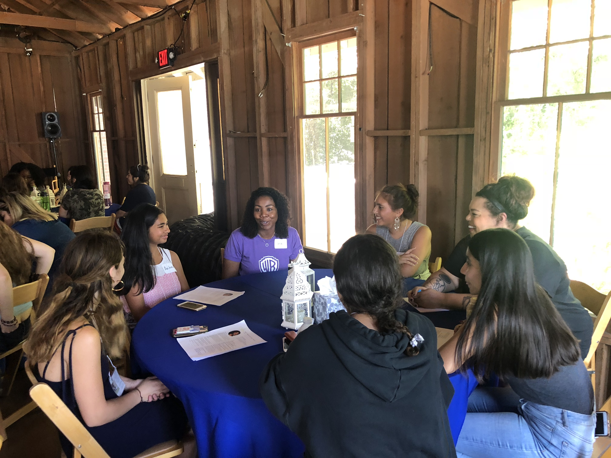
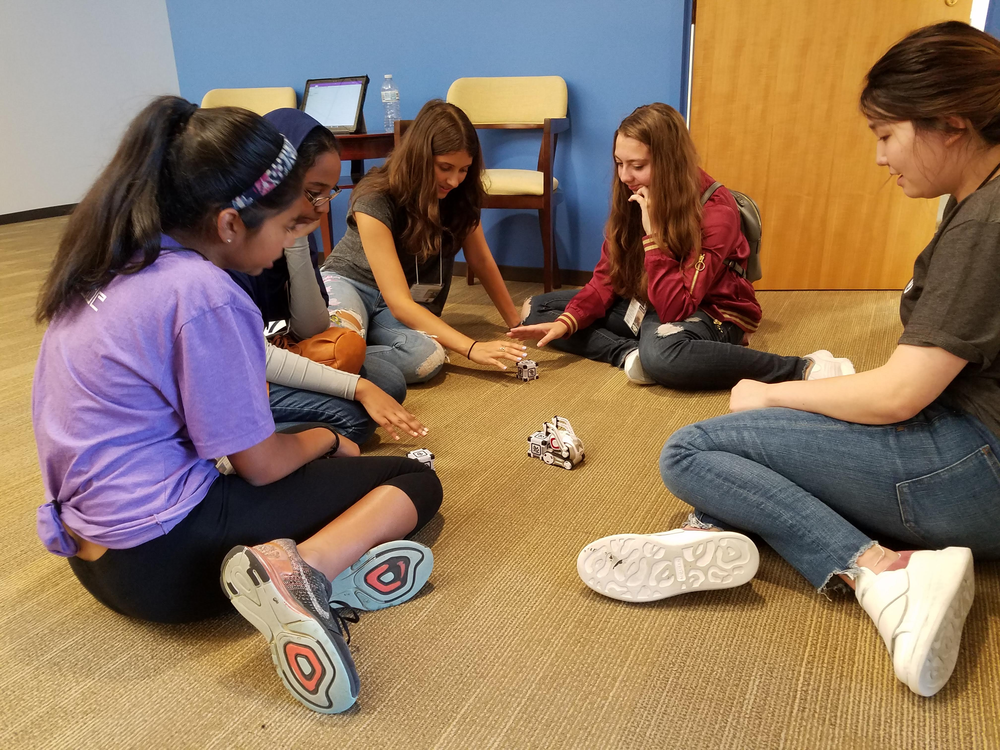

The Impact of Curriculum that Enhances and Diversifies Introductory Programming Courses
Throughout my time as a teaching assistant, I was able to witness several qualities of the Girls Who Code curriculum. These qualities revealed themselves in the specifics of what was being taught, how it was being taught, and the teaching philosophies that inspired the classroom culture. I recognized how these qualities had also been described by digital humanities scholars as characterisitcs that are important in teaching introductory coding to undergraduate digital humanities students.
Introductory Curriculum is Successful When it...
Instills confidence: Successful introductory curriculum shows students that they have be ability to learn the material, apply it to projects, and take on challenges (Eney et al. 49).
Creates a supportive community: Successful introductory curriculum provides students with a productive, supportive, comfortable, and diverse learning environment. This kind of environment is created by both classmates and instructors who can serve as role models and mentors (Eney et al. 49).
Redefines computer science: Successful introductory curriculum expands the definition of computer science. It draw attention to its interdisciplinary nature and wide array of applications of coding(Cooper & Dierker 92), as well as encourages students to see themselves as someone who can make an impact on the field (Saujani 2017).
Is accessible to those without prior background: Successful introductory curriculum respects and celebrates to the diversity of its students' backgrounds and adapts to keep all its students on the same page (Eney et al. 49).
Emphasizes the value of hard work, organization, and resilience: Successful introductory curriculum shows students that some "esoteric knowledge of currently popular technologies or some innate gift" they fear they don't have are not the greatest indicators of success. Instead, lessons and projects should point students towards the importance of hard work, organization, and resilience (Eney et al. 49).
Encourages creativity and discovery: Successful introductory curriculum doesn't necessarily introduce all the "detailed mechanisms of computing" before giving them a tast to complete. Instead, letting them try new things and piece together what they do know allows them to see programming "as a means of inquiry" toward a solution (Montfort 108).
Constantly evaluates student progress and success: Successful introductory curriculum uses student evaluations to assess the success of lessons and implements this feedback in the future (Muller & Kidd 184).
Allows students to learn by doing: Successful introductory curriculum teaches fundamentals in a way that allows students to engage and participate in creating code, rather than only watching someone else (Cooper & Dierker 97).
The Girls Who Code Curriculum
Classroom Culture
Establishing the Classroom Culture from the Beginning
The classroom was established as a environment of support.
The teaching team demonstrated respect and patience.
Time was set aside for icebreakers, in order to develop a supportive community among the girls.
Students were engaged in class discussions.
Pair programming and group projects were implemented. As later explained by one of the students, this was successful in developing comradery and could have been done even more.
On working in a group during projects, in their own words…
"I suggest more group work when possible because the subject is hard to grasp, and because grouping causes a sense of unity between the girls." - GJ
The teaching team defined computer science, reframing their expectations and exciting them about what they would learn during the summer.
For students who came in admitting that they didn’t exactly know how to define computer science, we were able to give them a definition right from the beginning.
For students who came in with preconceptions, we were able to debunk myths and eliminate stereotypes from the start.
The teaching team expanded the definition of computer science by introducing students to computer scientists and examples of computer science projects, as described by our students below.
On new understandings of computer science, in their own words…
"Before class started I thought a computer scientist was a robot builder/hacker but I learned there's a lot more to it and it's a very broad subject or profession." -RW
"My understanding of CS for me has changed to a huge variety of principles and activities involving computers. There are so many things that people do involving computer science like building video games, creating movies, editing movies or TV shows, and building apps and websites. Computer science is the future of our world because technology is always being revolutionized." - GS
Students started to see themselves as computer scientists.
The importance of collaborative work was emphasized, as described by one of the students below.
On new understandings of computer science, in their own words…
"My understanding of computer science has changed since I started the summer immersion program [sic] because I didn’t realize the amount of cooperation and group work that might be necessary and beneficial in computer science. I always thought that people who worked on computer science did it alone, but as we worked on projects this week, I realized that even computer science could be easier and more effective when we worked together." - AD
Four Days of Curriculum
For every week, only four days of curriculum were planned. This built in time for field trips, guest speakers, and flexibility in the length of lessons.
Students saw how technology was used in many different jobs in fun and interactive ways.
Womentoring


At Womentoring, different women from Warner Bros. came and shared their stories. Some participated by rotating through the tables and others by being part of a panel. The women took this mentoring opportunity to share their personal stories, answer questions, and pass on advice. At the end of the day, they came back to the classroom and our girls showed them their websites. The girls proudly showed off their work to women they respected, who were genuinely interested in, supportive of, and impressed with what they had worked on that week.
Augmented Reality/Virtual Reality Demo

We were able to try Harry Potter and Batman augmented reality apps, IT, Fantastic Beasts, Lego, and Fruit Ninja virtual reality games, and the Anki Cozmo Robot. Cozmo can be programmed by its user with a Scratch-like program. The girls were able to use what they had learned during the first week of the program to program him.
Unit 1: Fundamentals
Unit 1 has the students begin to learn the fundamentals of programming through Scratch, a drag-and-drop program with a user-friendly interface, and Python. These fundamentals include variables, loops, conditionals, functions, libraries, lists, and the concept of iterative design. Additionally, computer science is defined as using technology to solve problems. They are shown many examples of applications of computer science and computer scientists. Students begin to consider how their unique characteristics can play out in the field of computer science, a theme that is continually reinforced and evolving throughout the summer.
Students learned how to discover new things and teach themselves.
Students learned how to continue learning.
Projects allowed students to creatively express themselves.
Scratch was created for educational purposed had an intuitive design that made it easy enough for students to learn by trying new things.
The user-friendly program gave students many options and the ability to see results immediately and in an visually-appealing way.
Step-by-step demos and code-alongs, which as explained below by one of the students, helped to explain difficult concepts.
Students learned programming concepts without having to worry about specific syntax and with more flexibility to make mistakes.
On the helpfulness of step-by-step demos and code-alongs, in their own words…
"The best ways i [sic] learned was when we did code a longs [sic] and when we went through code line by line [sic] and broke things down. It made it so much easier to understand what things were doing and how they worked." - EH
Starting with Scratch ensured students of all abilities and experience could engage and participate.
The teaching team focused on thorough explanations and relevant examples to explain an unfamiliar subject.
The teaching team used "offline activities" were used to explain concepts. For example, we introduced algorithms by having students "program an instructor" to do dance moves.
Students received individual attention and help from teaching team, which was especially important for those not yet comfortable asking questions in front of whole class.
As explained below by the students, Scratch provided a positive first impression of coding that made them want to keep learning.
On starting off the program with Scratch, in their own words…
"I was glad that we started with Scratch and animations because it was simple and showed what code can do to things on a screen." - GS
"At the beginning of the week I thought that CS was an untouchable subject, one that was too difficult to begin with and too difficult to even approach. This week though, I became aware that it’s not too difficult to start, even if it begins with a kid’s game online. I have learned to create games and I am able to recall parts of programming that I wouldn’t have known if I weren’t here. Computer Science as a career seems like a viable option and my worries about its complex parts are diminishing." - GJ
The teaching team made an investment in taking the time to learn how our girls learn best.
The teaching team received feedback by evaluating the mood of the class and reading the girls’ journal entries.
The students preferred large class discussions to turning and talking to their desk partner because they wanted to hear everyone’s ideas.
The teaching team gave the students the space to consider how they learn best and share this with their teachers, such as the examples provided by students included below.
On answering what "What should your teachers know about you personally that can help you be successful this summer?" in their own words…
"I would say I’m pretty determined as a person but I can get frustrated very easily. I may not show it on the outside, but I’m often anxious if I can’t figure things out quickly." - LS
"One thing my teachers should know about me is I tend to learn better with visuals and examples." - EH
The teaching team gave the class the control to let us know when lessons were not working and to give us suggestions. For example, feedback from the first lesson on Python, a lesson we knew did not go well, is provided below.
Feedback from Day 6 (the first day of learning Python), in their own words…
"Python is really hard and I was so lost while everyone else was coding. I wish there was more time to understand it or if there was more help because a lot of girls where confused at the same time. With Scratch there were a lot of examples and I felt that with Python, Girls Who Code didn’t give a lot practice problems and so once we got to the challenges, I was completely lost on what exactly we were doing. I hope tomorrow we are given more practice and time to fully digest the code." - AW
"I am proud of figuring out nothing tbh [sic]. I do not recall anything I did today honestly except watching the thrilling shane dawson saga [sic] that came out during lunch... The fact that I was able to perform mathematical operations was probably the most interesting thing. The projects will help me one day, be able to understand python [sic]… p.s. [sic] so now I'm at the bus stop and I see that my initial comments were a bit harsh and pessimistic. I was very excited to start with python today and i am very glad that i was able to at least print “hello, world!” which I think I once heard was the first thing [sic] people code. I liked working with others, who were just as eager to learn. I am putting the difficult moments of today aside and trying to learn today at home so that I can prepare for tomorrow." - GJ
"Today the only thing I was proud of is was [sic] Archie’s mom in Riverdale when she cussed him out pretty much about being a traitor. Everything about Python was hard. Very hard. I understood why everything worked with other things, but once it came to writing the code it made no sense. I didn’t know where to start." - SL
This required humility from the teaching team to apologize to the class and admit when we didn’t get things right the first time.
The teaching team's responses formed student-teacher relationships built on honesty and trust.
This required extra time and dedication to rework a lesson, rather than just pushing on. This ultimately paid off, as suggested by feedback we received after reworking and reteaching the original Python lesson.
Feedback from Day 7 (the second day of learning Python), in their own words…
"I felt a lot better about Python today, and the review helped a lot. The lists were a bit confusing, but tomorrow I will have more time to fully understand everything about them." - AW
"I loveddddd [sic] how everything went down today. I finally understand what we learned in python [sic] and I’m 100% comfortable with it. Okay maybe not 100%, but it’ll get there." - SL
I thought today’s review was helpful because it helped me have a better understanding of the concepts we learned yesterday. I feel comfortable with the concepts we have learned so far." - KG
The review this morning was helpful in cementing some of the vocabulary for Python, but as we move forward I feel like independent review will benefit me most. I was not comfortable with everything we learned today, but as the first time seeing it, it’s fine." - KC
I would definitly [sic] say that the review we did today was very helpful. This is because yesterday I didn’t really actually know how to do the stuff we went over, but today after reviewing the information again now I feel comfortable with it." - GK
I do feel more comfortable using python [sic] because I actually got the adventure to work and it was much easier than the first day. I feel more comfortable. I was very proud of finishing the project and I’m very happy because I helped some of my group members and they helped me." - GP
Unit 2: Applications (Robotics, Web Development, Data Science)
Unit 2 emphasizes applications of computer science in a wide variety of fields. The students explored robotics, web development, and data science through news articles and videos, as well as creating their own projects.
"Robot Dance Party" Student Projects from the Second Day of the Robotics Unit
"Data Visualization" Sample Projects from the Second Day of the Data Unit
The teaching team used real world applications to capture the interest of students. While some students may already be drawn to coding, others will show a greater interest in the applications of coding and will be more likely to persist in learning when they are reminded of an end product. The student quotes below demonstrate the diverse range of incentives students had for participating in the program and topics they were excited to learn. This diversity shows the signigicance of highlighting applications of technology in holding the attention of a significant portion of the class.
On what they were initially most excited to learn, in their own words…
"I’m most excited to learn about Python, as I want to get a strong grasp on these basic programming languages. I am excited since programming languages are what I want to excel in, so this will be a nice introduction for me." - LC
"Since I pretty much have no previous coding or programming experience, I am really excited to learn about everything and don’t have anything specific that I am looking forward to. Overall, I am taking this program as a way to get my feet wet with the computer science field itself, simply to see whether or not it is something that I could pursue." - AD
"I’m most excited to learn how to code robots. I think this is really excited because at this point it’s not only coding a small video or something theoretical, but it’s actually coding something that will show results physically as well." - LS
"I’m most excited to learn how to make a website. It’s something I’ve always wanted to know how to do and I can’t wait. I’m also just excited to learn how to code in general but making a website sounds really exciting." - LO
"I am most excited to learn more about how computer science is used in the real world." - GK
The teaching team used relevant examples and analogies to explain difficult and novel concepts.
Concepts were explained in multiple ways, so that every student had many opportunities to engage with each concept.
Students attemptempted their own solutions to challenging activities and projects, with support and encouragement from the teaching team and their peers.
Studetns hypothesized how manipulating code would change the code’s execution during code-alongs and step-by-step demos.
Unit 3: Final Projects
In Unit 3, students use what they learned over the course of the summer to build a final project that addresses a real world problem. Students get experience using the iterative design-build-test cycle over the course of a large project, learning how to manage their time, stay organized, and respond and adjust to feedback. Students then create posters and pitches to present at graduation.
Inspires teens to actively use their voice to help out not only their community, but also ones around the world. Its main feature is pages dedicated to different world crises, including information about them, links to articles about them, and ways that teens can get involved.
Provides accessible resources for teens to live healthy lives. Its main features include exercise routines that can be done at home and are categorized by sport, music playlists to listen to during workouts, healthy recipe suggestions, and a restaurant finder that suggests restaurants with healthy options in the requested city.
An online site where you can be who you truly are and no one judges you. Instead, everyone accepts who you are and the diversity you bring. Its main feature is a chat room where you can talk to any of its creators about things that concern you about diversity or rant about an experience you have had. Its creators are a diverse group of girls who will be more than happy to give advice or be a good listening ear. The site also includes several articles they have personally researched and included.
Shows data visualizations that raise awareness of pollution levels throughout the US. As data is so robust and difficult to analyze, it was created from the belief that visual representations make understanding statistics simpler and give insight to how much the environment is negatively impacted by bad air quality. One main feature is graphs of the Air Quality Index (AQI) of sample states, California, New York, Hawaii, created by analyzing data from the Environmental Protection Agency (EPA.gov) and making graphs in Python. A second major feature is an interactive map of the US that reveals the AQI of each state capital.
A website to educate people about microaggressions and create a platform for people to share their stories and learn from others' experiences. It was created from the realization that as time progresses and society changes, it is important to help eliminate the lack of awareness of micraogressions and inform people on how they are discriminatory actions that fail to treat everyone justly and equally. Its main features include explanations of what microaggresions are and FAQs about them, a page of stories, an interactive quiz, a simulation game created in Scratch, and a Resources Page.
Students eceived support and help from the teaching team.
Students xperienced working with a team on a big project.
Students showed positivity and flexibility in finding solutions and making continual improvements.
Students respected ideas and styles that were different from their preferences.
Students distinguished between when to collaborate and compromise, and when to hold their ground and vouch for their ideas and vision.
Emphasize the value of hard work, organization, and resilience (Eney et al. 49)
Students developed planning skills by setting and prioritizing various short-term and long-term goals.
Groups prioritized creating a minimum viable product before adding finishing stylistic touches.
Students remained resilient even when they got stuck or their code didn’t work the way they expected it to.
Students felt ownership over a project they invested almost 2 full weeks into.
Groups had the freedom to set their own work schedule and learned to make responsible decisions to balance work and breaks, which as admitted by a student below, required recognizing where they had room for improvement.
On how working as a team was going, in their own words…
"I think we could try to be more focused and take smaller breaks". –LS
Groups collaborated on one project with multiple files, which required reliable communication to share and keep track of everyone's work, but allowed for everyone to be involved. This is described below by one of the girls (the same girl who admitted her team could have taken fewer breaks, now shares successes of her team).
On how working with a team was going, in their own words…
"We're working well as a team because we always share our code and make sure everyone knows what is going on. Today we mostly worked separately but at the end we used both of our codes for our 'final' code of the day" – LS
Students were not intimidated to imagine projects that they didn’t initially have a solution for.
Students used resources in new and more developed ways than they had before, such as using Python to analyze a data set from the US Environmental Protection Agency and further improving their web development skills to create more complex websites than they had previously made.
Students extended and improved upon their original vision for their project.